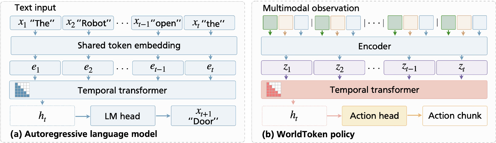
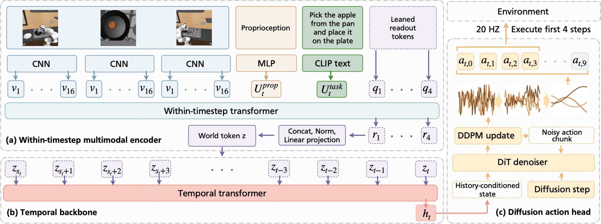
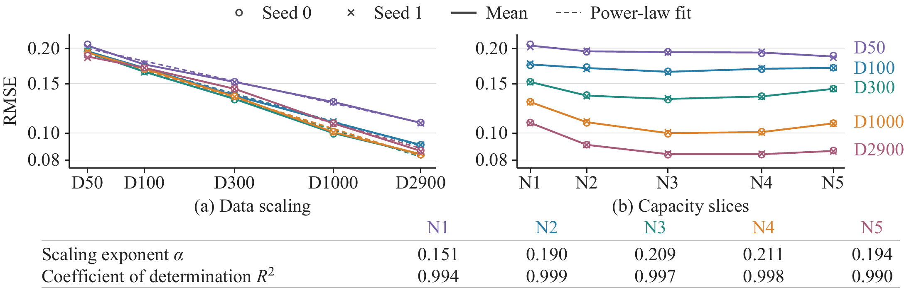

The robot observes its surroundings.
WorldToken brings together the robot’s camera views, body position, and task instruction so it can use them together.
1 Wuhan University 2 Tsinghua University

At each step, WorldToken combines the camera views, the robot’s body position, and its task instruction into a compact representation called a world token. It uses the sequence of these tokens to decide how to move.

WorldToken brings together the robot’s camera views, body position, and task instruction so it can use them together.
The model reads the world tokens in time order, connecting the current situation with earlier observations.
Using the current observation and its history, the model generates a short sequence of movements for the robot to carry out.
The robot must rearrange three colored blocks through a sequence of swaps. Both videos use the same model and start with the same block arrangement. We change how far back the model can look.
Playback could not start. Please use the individual video controls.
When the robot can look further back, it is more likely to finish the block-rearrangement task. The bars show how often it succeeds with different amounts of memory.
How much of the past the robot can see
In this longer demonstration, the robot continues after its first success and makes 31 correctly ordered swaps.
Watch the full recording below, or increase the playback speed to see how the sequence unfolds.
Watch more block-rearrangement videosThe video could not start. Please try the video’s own play button.
These videos show WorldToken performing tasks in a simulated kitchen. Each clip shows the same action from three camera views, so you can see how the robot moves and handles objects.
Full experiment recordsWorldToken learns by following examples of how a task should be done. Giving it more examples helps it perform kitchen tasks more successfully.
We trained an 85-million-parameter model with different numbers of demonstrations for each task. As the number of examples grew, it succeeded more often across 23 kitchen tasks.
The chart shows how often the robot completes a task successfully.
Read more about the experiments in the paperThe left plot shows how adding demonstrations reduces errors in predicted movements. The right plot shows how those errors change with model size.

We share our code, trained models, and experiment records so you can try WorldToken and learn more about how it works.
Use the code and setup instructions to train WorldToken or run it on new tasks.
GitHub · WorldTokenDownload trained models and follow the instructions to run them in RoboCasa.
Hugging Face · ModelsBrowse the training logs, test results, and videos behind the paper’s findings.
Hugging Face · Records@article{yang2026worldtoken,
title = {WorldToken: Time-First Sequence Modeling for Robotic Imitation Learning},
author = {Yang, Chunkai and Yang, Andong and Huang, Di and Gao, Chao and Zhou, Guyue},
journal = {arXiv preprint arXiv:2608.22591},
year = {2026},
url = {https://arxiv.org/abs/2608.22591}
}